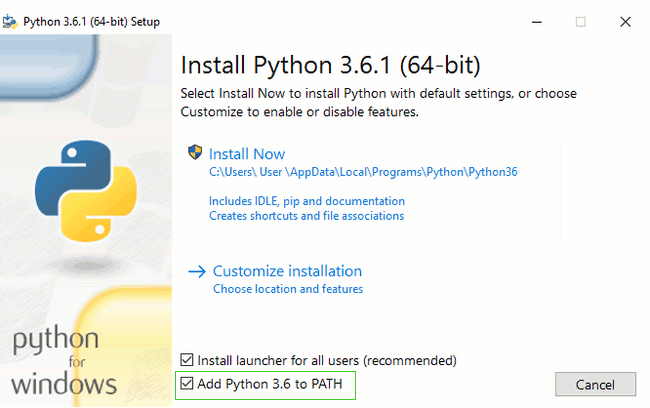

Jeśli robisz ten kurs w domu
Jeśli robisz ten kurs w domu, a nie w trakcie jednego z warsztatów Django Girls, możesz pominąć ten rozdział i przejść od razu do Jak działa internet?.
Informacje, które się tutaj znajdują, napotkasz również w kolejnych rozdziałach. W trakcie warsztatów Django Girls, instalujemy wszystko w trakcie jednego wieczoru, żeby następnego dnia nie musieć się o to martwić. Zebrałyśmy więc wszystkie potrzebne informacje w jedno miejsce.
Jeśli chcesz, też możesz zainstalować wszystko od razu. Ale jeśli wolisz zacząć naukę już teraz bez instalowania najpierw kilku nowych rzeczy na swoim komputerze, pomiń ten rozdział. Wszystko wytłumaczymy później.
Powodzenia!
Instalacja
Podczas warsztatów będziesz budować blog, ale abyś mogła zacząć programować, musimy najpierw zainstalować kilka rzeczy.
Cloud 9
twojanazwaużytkownika:~/workspace $ Dolny obszar jest Twoim *terminalem*, gdzie będziesz wpisywać komendy do Cloud 9, który jest przygotowany na Twoje instrukcje. Możesz też zmienić rozmiar tego okna, aby było nieco większe. ### Środowisko wirtualne Środowisko wirtualne (Virtual Environment - zwany także virtualenv) jest jak skrzynka, do której możemy wstawić użyteczny program komputerowy dla projektu nad którym pracujemy. Używamy go aby oddzielić od siebie różne części kodu, potrzebne nam w różnych projektach, przez co nie mieszają się one pomiędzy różnymi projektami. W swoim terminalu na dole ekranu Cloud 9 wykonaj następujące polecenie:Cloud 9
sudo apt update sudo apt install python3.6-venv Jeżeli polecenie cały czas nie chce zadziałać, poproś o pomoc swojego mentora. Następnie uruchom:Cloud 9
mkdir djangogirls cd djangogirls python3.6 -mvenv myvenv source myvenv/bin/activate pip install django~=2.0.6 (zauważ, że w ostatniej linii użyliśmy tyldy, za którą następuje znak równości: ~=). ### GitHub Załóż konto na [GitHubie](https://github.com). ### PythonAnywhere Tutorial Django Girls zawiera sekcję dotycząca wdrożenia, tzn. procesu przenoszenia kodu programu, który odpowiada za działanie naszej nowej aplikacji internetowej na publicznie dostępny komputer (zwany serwerem) w taki sposób, by inne osoby były w stanie zobaczyć Twoje dzieło. Ta część może wydać się lekko niezrozumiała, gdy przechodzimy tutorial na Chromebooku, skoro w trakcie tutoriala używamy komputera, który już jest w Internecie (w odróżnieniu od chociażby naszego laptopa). Jednak, może ona być cały czas przydatna, byśmy traktowały nasze konto w Cloud9 jako miejsce, w którym postępuje nasza praca oraz PythonAnywhere jako miejsce, gdzie możemy pokazać światu nasze dzieło, gdy tylko będzie ono bardziej dokończone. Dlatego właśnie załóż nowe konto w PythonAnywhere pod adresem [www.pythonanywhere.com](https://www.pythonanywhere.com).Zainstaluj Pythona
Dla czytelniczek w domu: ten rozdział jest również omówiony w wideo Installing Python & Code Editor.
Niniejszy podrozdział powstał w oparciu o kurs Geek Girls Carrots (https://github.com/ggcarrots/django-carrots)
Django jest napisane w Pythonie. Musimy posiadać Pythona, by zrobić cokolwiek w Django. Zacznijmy od jego instalacji! Chcemy zainstalować Python 3.6, więc jeżeli posiadasz jakąkolwiek wcześniejszą wersję, będziesz musiała ją uaktualnić.
Na początku sprawdź, czy twój komputer działa na 32-bitowej czy 64-bitowej wersji Windowsa, poprzez wciśnięcie kombinacji przycisków Windows + Pause/Break, które otworzą Właściwości systemu - sprawdź w linii "Typ systemu". Możesz ściągnąć Pythona dla Windowsa ze strony https://www.python.org/downloads/windows/. Kliknij w link "Latest Python 3 Release - Python x.x.x". Jeżeli twój komputer pracuje na 64-bitowej wersji Windowsa, ściągnij Windows x86-64 executable installer. W innym wypadku ściągnij Windows x86 executable installer. Po ściągnięciu instalatora, powinnaś go uruchomić (klikając dwukrotnie w niego) i postępować według wyświetlanych instrukcji.
Na jedną rzecz będziesz musiała uważać: Podczas instalacji zauważysz ekran oznaczony jako "Setup". Upewnij się, że zaznaczyłaś checkbox "Add Python 3.6 to PATH" oraz kliknęłaś "Install Now", tak jak tutaj:

W nadchodzących krokach, będziesz używać "Wiersza polecenia" Windowsa (o którym też Ci zaraz opowiemy). Na tę chwilę, jeżeli potrzebujesz wykonać jakąś komendę, przejdź do menu Start i wpisz "Wiersz polecenia" w pole wyszukiwania. (Na starszych wersjach Windowsa możesz uruchomić "Wiersz polecenia" wyszukując w menu Start → System → Wiesz polecenia.) Możesz też przytrzymać klawisz Windows wciskając jednocześnie przycisk "R" do momentu pojawienia się okna "Uruchamianie". W celu otworzenia Wiersza polecenia, wpisz "cmd" i wciśnij przycisk enter w oknie "Uruchamianie".

Uwaga: Jeżeli używasz starszej wersji Windowsa (7, Vista lub jakikolwiek starszy) i podczas instalacji Python 3.6.x dostaniesz błąd, możesz:
- zainstalować wszystkie uaktualnienia systemu Windows a spróbować instalacji Pythona 3.6 jeszcze raz; lub
- zainstalować starszą wersję Pythona, np. 3.4.6.
Jeżeli zainstalujesz starszą wersję Pythona, ekrany instalatora mogą wyglądać nieznacznie inaczej niż pokazane wyżej. Upewnij się, że przewinęłaś do "Add python.ext to Path", kliknęłaś przycisk po lewej i wybrałaś "Will be installed on local hard drive":

Uwaga Zanim zainstalujesz Pythona na OS X, musisz się upewnić, że ustawienia twojego Maca pozwolą na instalację pakietów, które nie pochodzą z App Store'a. Przejdź do Preferencji systemowych (znajdziesz je w folderze Aplikacje), kliknij "Ochrona i prywatność" i przejdź do zakładki "Ogólne". Jeżeli w "Dopuszczaj aplikacje pobrane z:" jest ustawione na "App Store", zmień to na "App Store i od zidentyfikowanych deweloperów".
Przejdź na stronę https://www.python.org/downloads/release/python-361/ i pobierz instalator Pythona:
- Pobierz plik o nazwie Mac OS X 64-bit/32-bit installer,
- Kliknij dwukrotnie na python-3.6.1-macosx10.6.pkg, by uruchomić instalator.
Jest bardzo prawdopodobne, że masz już zainstalowanego Pythona wraz z systemem. Aby się upewnić (a także sprawdzić jego wersję) otwórz konsolę i wpisz następujące polecenie:
command-line
$ python3 --version
Python 3.6.1
Jeżeli masz zainstalowaną inną 'mikrowersję' Pythona, np. 3.6.0, to nie ma potrzeby, byś dokonywała aktualizacji. Jeżeli nie masz zainstalowanego Pythona lub chciałabyś zainstalować go w innej wersji, skorzystaj z jednego z poniższych sposobów:
Sprawdź, czy instalacja zakończyła się pomyślnie - otwórz wiersz polecenia i uruchom polecenie python3:
command-line
$ python3 --version
Python 3.6.1
Uwaga: Jeżeli pracujesz na Windowsie i dostajesz wiadomość o błędzie, że python3 nie został znaleziony, spróbuj użyć python (bez 3) oraz sprawdź, czy być może w taki sposób uruchomisz Pythona 3.6.
W razie jakichkolwiek wątpliwości albo jeśli coś poszło nie tak i nie wiesz, co dalej robić, zapytaj mentora lub osobę prowadzącą kurs! Czasami nie wszystko idzie tak, jak powinno i najlepszym wyjściem z sytuacji jest poprosić o pomoc kogoś bardziej doświadczonego.
Utwórz środowisko wirtualne i zainstaluj Django
Fragmenty tego rozdziału napisane są w oparciu o kurs Geek Girls Carrots (https://github.com/ggcarrots/django-carrots).
Fragmenty tego rozdziału są oparte o tutorial django-marcador na licencji Creative Commons Attribution-ShareAlike 4.0 International. Tutorial django-marcador jest chroniony prawami autorskimi przez Markusa Zapke-Gründemanna i in.
Środowisko wirtualne
Zanim zainstalujemy Django, zapoznamy się z niezwykle użytecznym narzędziem, które pomoże utrzymać porządek poczas pracy z kodem na Twoim komputerze. Można ten krok pominąć, ale zachęcamy, żebyś tego nie robiła. Dobrze jest zacząć z możliwie najlepszą konfiguracją, gdyż zaoszczędzi Ci to wielu problemów w przyszłości!
Stwórzmy zatem środowisko wirtualne (zwane też virtualenv). Jego zadaniem jest oddzielenie środowiska Pythona/Django dla każdego projektu z osobna. Oznacza to, że zmiany dokonane w obrębie jednej aplikacji nie wpłyną na działanie innych, nad którymi pracujesz. Sprytne, prawda?
Jedyne, co potrzebujesz zrobić, to wybrać katalog, w którym chcesz utworzyć virtualenv; na przykład Twój katalog domowy. Na Windowsie może on wyglądać jak C:\Users\Name (gdzie Name jest twoim loginem).
UWAGA: W Windowsie upewnij się, że katalog ten nie zawiera znaków akcentowanych lub specjalnych; Jeśli Twoja nazwa użytkownika zawiera znaki akcentowane, użyj innego katalogu, na przykład
C:\djangogirls.
Na potrzeby kursu będziemy tworzyć nowy katalog djangogirls w Twoim katalogu domowym:
command-line
$ mkdir djangogirls
$ cd djangogirls
Stwórzmy nowe środowisko wirtualne o nazwie myvenv. Polecenie ma następujący format:
command-line
$ python3 -m venv myvenv
Aby utworzyć nowego virtualenv'a, musisz otworzyć okno wiersza polecenia i wykonać polecenie python -m venv myvenv. Będzie to wyglądać tak:
command-line
C:\Users\Name\djangogirls> python -m venv myvenv
Gdzie myvenv to nazwa Twojego virtualenv'a. Nazwa może być dowolna, ale lepiej używać tylko małych liter, bez spacji i polskich znaków. Dobrze jest też trzymać się krótkich nazw - będziesz do nich często wracała!
Możemy stworzyć virtualenv'a w Linuksie i OS X poprzez użycie jedynie polecenia python3 -m venv myvenv. Przyjmie ono następującą postać:
command-line
$ python3 -m venv myvenv
myvenv to nazwa Twojego virtualenv'a. Nazwa środowiska może być dowolna, ale lepiej używać tylko małych liter, bez spacji i polskich znaków. Dobrze jest też trzymać się krótkich nazw - będziesz do nich często wracała!
UWAGA: W niektórych wersjach Debiana/Ubuntu może pojawić się następujący komunikat o błędzie:
command-line
The virtual environment was not created successfully because ensurepip is not available. On Debian/Ubuntu systems, you need to install the python3-venv package using the following command. apt install python3-venv You may need to use sudo with that command. After installing the python3-venv package, recreate your virtual environment.W tym przypadku, wykonaj powyższe instrukcje i zainstaluj pakiet
python3-venv:command-line
sudo apt install python3-venvUWAGA: W niektórych wersjach Debiana/Ubuntu inicjowanie środowiska wirtualnego w ten sposób daje obecnie następujący błąd:
command-line
Error: Command '['/home/eddie/Slask/tmp/venv/bin/python3', '-Im', 'ensurepip', '--upgrade', '--default-pip']' returned non-zero exit status 1Aby uniknąć tego problemu, użyj polecenia
virtualenv.command-line
$ sudo apt install python-virtualenv $ virtualenv --python=python3.6 myvenvUWAGA: Jeśli wystąpi błąd taki jak
command-line
E: Unable to locate package python3-venvto zamiast tego wykonaj:
command-line
sudo apt install python3.6-venv
Praca z virtualenv
Powyższa instrukcja utworzy katalog o nazwie myvenv (albo o nazwie, którą wybrałaś) zawierający nasze środowisko wirtualne (czyli w zasadzie zbiór katalogów i plików).
Uruchom wirtualne środowisko za pomocą polecenia:
command-line
C:\Użytkownicy\Nazwa\djangogirls> myvenv\Scripts\activate
Uwaga: W systemie Windows 10 możesz otrzymać błąd w programie Windows PowerShell, który mówi,
wykonywanie skryptów jest wyłączone w tym systemie. W tym przypadku, otwórz inny Windows PowerShell z opcją "Uruchom jako Administrator". Następnie spróbuj, wpisując następujące polecenie przed rozpoczęciem środowiska wirtualnego:command-line
C:\WINDOWS\system32> Set-ExecutionPolicy -ExecutionPolicy RemoteSigned Execution Policy Change The execution policy helps protect you from scripts that you do not trust. Changing the execution policy might expose you to the security risks described in the about_Execution_Policies help topic at http://go.microsoft.com/fwlink/?LinkID=135170. Do you want to change the execution policy? [Y] Yes [A] Yes to All [N] No [L] No to All [S] Suspend [?] Help (default is "N"): A
Uruchom wirtualne środowisko za pomocą polecenia:
command-line
$ source myvenv/bin/activate
Nie zapomnij zastąpić myvenv nazwą, którą wybrałaś dla Twojego virtualenv!
UWAGA: może się zdarzyć, że polecenie
sourcenie będzie dostępne. W takim przypadku spróbuj użyć poniższego:command-line
$ . myvenv/bin/activate
O tym, że Twój virtualenv jest uruchomiony, dowiesz się, gdy zobaczysz w swojej konsoli prompt poprzedzony przedrostkiem (myvenv).
W trakcie pracy ze środowiskiem wirtualnym python będzie automatycznie odnosił się do właściwej wersji, dzięki czemu możesz używać polecenia python zamiast python3.
Świetnie, wszystkie potrzebne elementy są już gotowe. Nareszcie możemy zainstalować Django!
Instalowanie Django
Teraz, gdy Twój virtualenv jest już uruchomiony, możesz zainstalować Django.
Zanim jednak to zrobimy, powinniśmy się upewnić, że mamy najnowszą wersję pip, oprogramowania, które używamy do zainstalowania Django:
command-line
(myvenv) ~$ python3 -m pip install --upgrade pip
Instalacja pakietów z pliku wymagań
Plik wymagań zawiera listę zależności, które zainstalujemy za pomocą polecenia pip install:
Na początek stwórz plik requirements.txt wewnątrz katalogu djangogirls/:
djangogirls
└───requirements.txt
W swoim pliku djangogirls/requirements.txt powinnaś dodać następujący tekst:
djangogirls/requirements.txt
Django~=2.0.6
Teraz możesz uruchomić pip install -r requirements.txt, aby zainstalować Django.
command-line
(myvenv) ~$ pip install -r requirements.txt
Collecting Django~=2.0.6 (from -r requirements.txt (line 1))
Downloading Django-2.0.6-py3-none-any.whl (7.1MB)
Installing collected packages: Django
Successfully installed Django-2.0.6
Jeżeli w trakcie wywoływania polecenia pip w Windows otrzymasz błąd, sprawdź czy ścieżka Twojego projektu nie zawiera spacji, kresek lub znaków specjalnych (np.
C:\Users\User Name\djangogirls). Jeżeli tak, sugerujemy przeniesienie projektu do innego katalogu bez spacji, kresek i znaków specjalnych (propnujemyC:\djangogirls). Utwórz nowy virtualenv w nowym katalogu, następnie usuń stary i spróbuj ponownie wykonać powyższe polecenie. (Przenoszenie katalogu virtualenv nie będzie działać ponieważ virtualenv używa ścieżek bezwzględnych.)
To wszystko! Teraz (nareszcie) jesteś gotowa do stworzenia aplikacji w Django!
Zainstaluj edytor kodu
Istnieje wiele programów tego typu, jednak który wybrać? To nie takie proste, bo wybór zależy w dużej mierze od tego, czego oczekujesz od swojego edytora. Większość programistów Pythona używa bardzo skomplikowanych i niezwykle bogatych w różne funkcjonalności IDE (z ang. Integrated Development Environments - zintegrowane środowisko deweloperskie), takich jak: PyCharm. Jako osoba początkująca nie potrzebujesz jednak aż tak skomplikowanego edytora. Wystarczy coś prostszego, ale nadal dostatecznie użytecznego.
Nasze propozycje prezentujemy poniżej, ale w razie czego spytaj o sugestie swojego mentora - będzie on w stanie wybrać coś zgodnego z Twoimi preferencjami.
Gedit
Gedit to open source'owy i darmowy edytor dostępny dla wszystkich systemów operacyjnych. Czasami nie jest jednak zbyt prosty w zainstalowaniu.
Sublime Text 3
Sublime Text jest bardzo popularnym edytorem z bezpłatnym okresem testowania i jest dostępny dla wszystkich systemów operacyjnych.
Atom
Atom jest stosunkowo nowym edytorem tekstu stworzonym przez GitHub. Jest bezpłatny, open-source'owy i dostępny dla systemów Windows, OS X i Linux.
Dlaczego instalujemy edytor kodu?
Może się zastanawiasz dlaczego instalujemy specjalny edytor kodu zamiast używać Notatnika albo Notepada.
Podstawowym powodem jest to, że kod musi być zwykłym, niesformatowanym tekstem, co powoduje że nie możemy tutaj użyć programów takich jak Word czy Textedit, ponieważ produkują one nie zwykły tekst, tylko tekst sformatowany (z informacją odnośnie użytej czcionki, sposobu formatowania), używając specjalnych formatów danych, jak na przykład RTF (Rich Text Format).
Drugim powodem jest specjalizacja edytorów kodu - dzięki temu mogą one dostarczać bardzo użytecznych funkcjonalności, jak kolorowanie składni zgodnie z jej przeznaczeniem lub automatyczne zamykanie cudzysłowów zamiast Ciebie.
Za chwilę przetestujemy wybrany edytor w akcji. Nim się obejrzysz, będziesz uważać swój edytor tekstu jako jedno z ulubionych narzędzi. :)
Zainstaluj Gita
Git jest "systemem kontroli wersji", którego używa wielu programistów. Program ten śledzi zmiany w plikach na przestrzeni czasu, dzięki czemu możesz później przywracać wybrane wersje tych plików. Działa trochę jak funkcja "śledź zmiany" w Microsoft Word, ale jest o wiele potężniejszy.
Instalacja Gita
Możesz ściągnąć Gita z git-scm.com. Możesz klikać "next" we wszystkich krokach instalacji prócz jednego, w kroku nazwanym "Adjusting your PATH environment", wybierz "Use Git and optional Unix tools from the Windows Command Prompt" (dolna opcja). Poza tym domyślne ustawienia są w porządku. Upewnij się jeszcze, że w kroku "Configuring the line ending conversions" wybrana jest opcja "Checkout Windows-style, commit Unix-style line endings".
Nie zapomnij zrestartować wiersza polecenia lub Powershell po instalacji zakończonej sukcesem.
Ściągnij Gita z git-scm.com i postępuj zgodnie z instrukcją.
UwagaJeżeli działasz na OS X 10.6, 10.7 lub 10.8, będziesz musiała zainstalować wersję gita dostępną tutaj: Git installer for OS X Snow Leopard
Utwórz konto na GitHubie
Wejdź na stronę GitHub.com i załóż darmowe konto użytkownika.
Utwórz konto na PythonAnywhere
Czas utworzyć darmowe konto (opcja "Beginner" - dla początkujących) na PythonAnywhere:
Uwaga Wybierając tutaj swoją nazwę użytkownika, należy pamiętać, że adres URL bloga będzie miał postać
yourusername.pythonanywhere.com, więc wybierz swój własny nick lub nazwę tego, o czym będzie blog.
Tworzenie tokenu PythonAnywhere API
Tę operację będziesz musiała wykonać tylko raz. Kiedy już zakończysz tworzenie konta na PythonAnywhere, zostaniesz przeniesiona do strony nawigacyjnej. Znajdź u góry na prawo link do twojego konta (ang. Account), a następnie wybierz zakładkę o nazwie "API Token" i wciśnij przycisk, który utworzy nowy token API (ang. "Create new API token").

Zacznij czytać
Gratulacje, jesteś gotowa, by zacząć pracę! Jeśli masz trochę czasu przed warsztatami, możesz przeczytać początkowe rozdziały:
Ciesz się warsztatami!
Kiedy zaczniesz warsztaty, będziesz mogła przejść od razu do rozdziału Twój pierwszy projekt w Django! ponieważ już przebrnęłaś przez materiał z wcześniejszych rozdziałów.